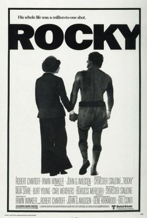

Rocky, um Lutador (1976)

Diretor: John G. Avildsen
Atores: Sylvester Stallone, Burgess Meredith, Talia Shire, Burt Young, Carl Weathers
Gênero: drama, ação, esporte
Censura: 12 anos
Duração: 120 minutos
Sinopse: Rocky Balboa (Sylvester Stallone), um lutador de boxe medíocre que trabalha como "cobrador" de um agiota, tem a chance de enfrentar Apollo Creed (Carl Weathers), o campeão mundial dos pesos-pesados, que teve a idéia de dar oportunidade a um desconhecido como um golpe publicitário. Mas Rocky decide treinar de modo intensivo, sonhando apenas em terminar a luta sem ter sido nocauteado pelo campeão.